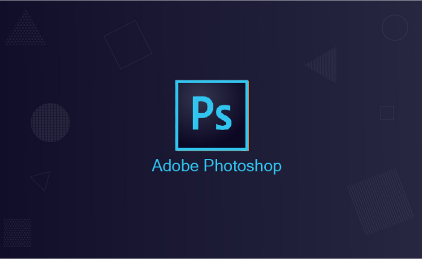

|
Adobe Lightroom |
Apresentação
 |
Adobe Photoshop é um programa profissional de edição de imagem disponível para download no PC (Windows e macOS), além de ser possível baixar no celular Android ou iPhone (iOS).Vale ressaltar que não existe uma versão oficial para web, ou seja, não é possível usar o Photoshop online. Porém, a Adobe lançou o Photoshop Express, que é uma alternativa ao Photoshop Online. |
| O programa traz funções básicas para edição de imagem, além de recursos mais profissionais. O software permite recortar e redimensionar imagens, aplicar filtros e regular parâmetros de cores, fazer ajustes de exposição e brilho em fotografias. Além disso, usuários iniciantes podem usar o Photoshop para remover manchas e espinhas da pele, inserir textos sobre imagens e simular o efeito modo retrato encontrado em aplicativos e recursos da câmera de celulares. |  |
|  | O Adobe Photoshop é uma ótima escolha para edição de imagens, especialmente para quem busca objetivos profissionais. Ele oferece um vasto leque de recursos, que são úteis e cumprem bem a função que se propõem.Com o menu e as opções em português, a experiência no Adobe Photoshop CC é mais dinâmica, especialmente para quem não domina o inglês, idioma comum nas versões do programa. |
 | |
|